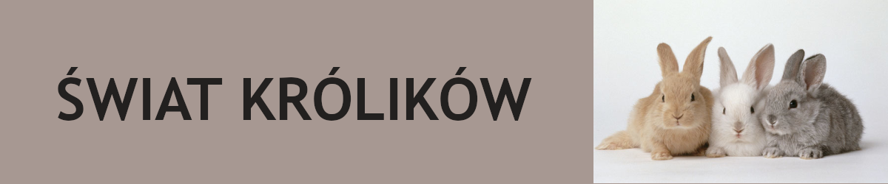
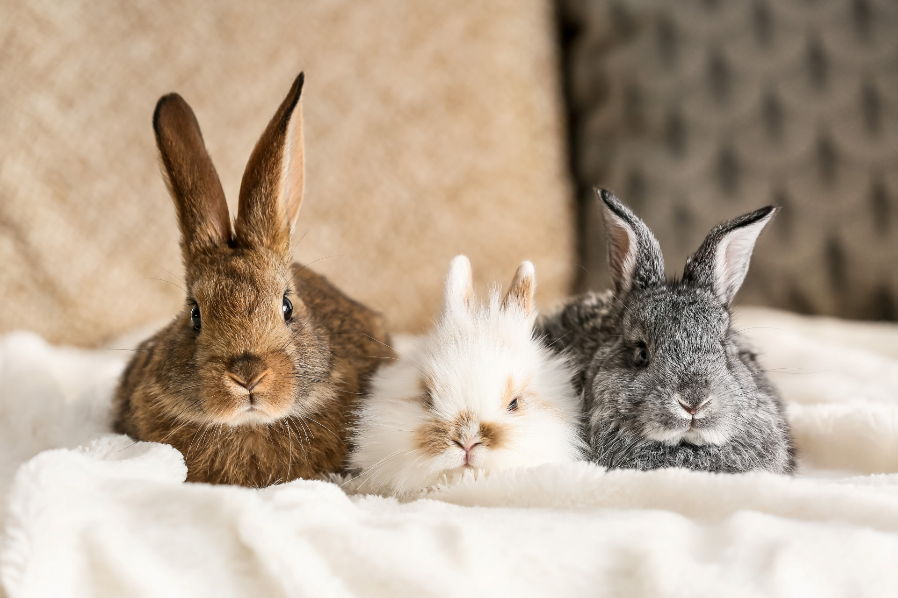

Witamy w Świecie Królików! Twoim przewodniku po najbardziej wyjątkowych rasach tych uszatych zwierząt! Nasza strona powstała, aby przybliżyć Ci sylwetki czterech niezwykłych odmian królików, które zachwycają swoim wyglądem i charakterem. Odkryj z nami fascynujący świat wybranych ras: Angora – puszysta królowa o niezwykle miękkiej i długiej sierści. Olbrzym Belgijski – prawdziwy król wagi ciężkiej o łagodnym usposobieniu. Baranek – uroczy towarzysz rozpoznawalny po charakterystycznych, oklapniętych uszach. Baran Francuski – potężny i dostojny uszak, łączący cechy olbrzyma i baranka. Poznaj ich historię, wygląd oraz unikalne cechy charakteru. Kliknij w wybraną rasę i dowiedz się o nich wszystkiego!
Czy wiesz, że... Zęby królika (zarówno siekacze, jak i zęby policzkowe) rosną przez całe jego życie – nawet do 10-12 centymetrów rocznie! Aby zachować zdrowie, uszaki muszą bez przerwy przeżuwać twarde siano i gałązki, ścierając je każdego dnia.